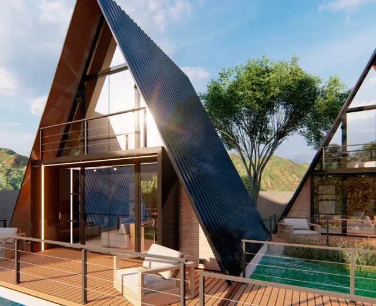
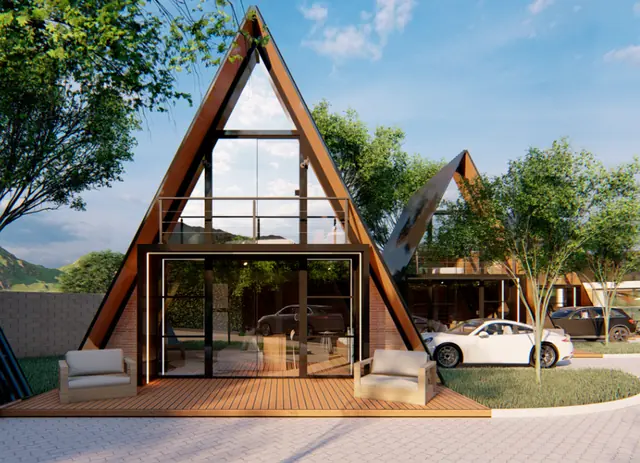
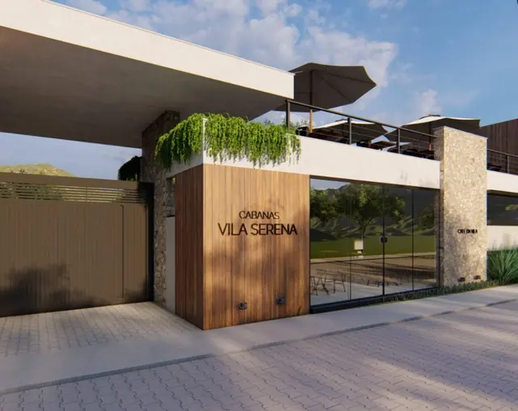
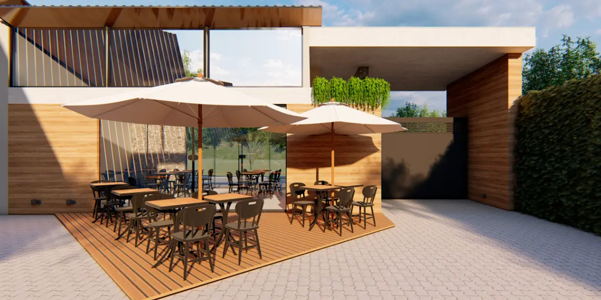
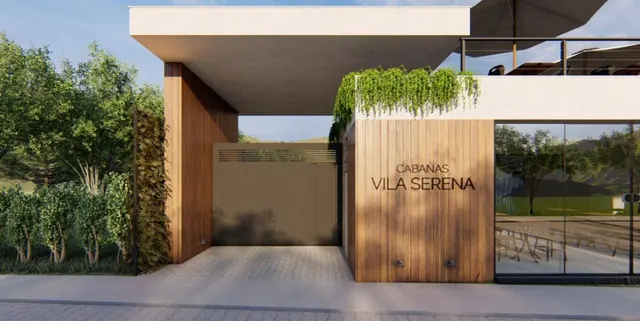

Alto Caparaó · Serra do Caparaó, MG
Cabanas na serra do Caparaó, feitas para desacelerar.
Arquitetura A-frame, vidro do chão ao teto e a montanha como paisagem. A Vila Serena abre em [PREVISÃO], e quem está na lista reserva primeiro.
em fileira
e mezanino
prevista
começa no parque
cabanas
Uma parede inteira de vidro, virada para a montanha.
São [7 CABANAS? CONFIRMAR] em fileira, cada uma com o seu deck. Embaixo, o espaço aberto para o deck; em cima, o mezanino envidraçado com vista para a serra.
a vila
Por dentro da Vila Serena.
Das cabanas ao café, tudo no mesmo terreno, de frente para a serra. Toque para ir até cada parte.

Imagem ilustrativa As cabanasMezanino de vidro, deck e poltronas de frente para a serra.Ver as cabanas →
Imagem ilustrativa O deckLâmina d'água em frente a algumas cabanas. [CONFIRMAR]Ver detalhes → Imagem ilustrativa Café da VilaDeck com mesas, ombrelones e terraço no andar de cima.Ver o café →
Imagem ilustrativa A recepçãoMadeira, pedra e a jardineira na entrada, em Alto Caparaó.Como chegar →lista de espera
Seja um dos primeiros hóspedes.
As cabanas ainda estão saindo do papel. Responda quatro perguntas e a Vila Serena chama vocês primeiro quando as reservas abrirem.
- Sem senha, sem e-mail
- A mensagem fica pronta, você só envia
- Quem está na lista escolhe as datas primeiro
Sem pressa, a serra espera vocês.
como reservar
Da lista de espera à primeira noite.
- 01
Lista de espera
Você diz quando quer vir, quem vem e a ocasião. Leva menos de um minuto.
- 02
Aviso da abertura
Quando as reservas abrirem, quem está na lista é chamado primeiro.
- 03
Datas e sinal
Escolhidas as datas, a reserva é confirmada. [TEM SINAL? QUANTO E POR ONDE?]
- 04
Chegada
Check-in a partir de [HORÁRIO], com a cabana pronta e a serra na janela.

café da vila
O dia começa no deck do café.
[CONFIRMAR: café da manhã dos hóspedes, aberto ao público ou os dois?]
Mesas de madeira, ombrelones e um terraço no andar de cima, com a serra de um lado e as cabanas do outro.
antes de reservar
O que perguntam antes de vir.
Horários, regras e como funciona o sinal. Ficou alguma? Pergunte no WhatsApp.
acompanhe a obra
A Vila Serena está sendo construída agora.
Siga a obra até a inauguração pelo Instagram. Seguir @cabanasvilaserena
localização
Em Alto Caparaó, a porta mineira do Parque Nacional.
Av. Vereador Inimá Novaes de Campos, 240Alto Caparaó, MG · 36979-000
- WhatsApp(32) 99854-1677
- Instagram@cabanasvilaserena
- De carro, a partir de

Imagem ilustrativa do projetopor perto